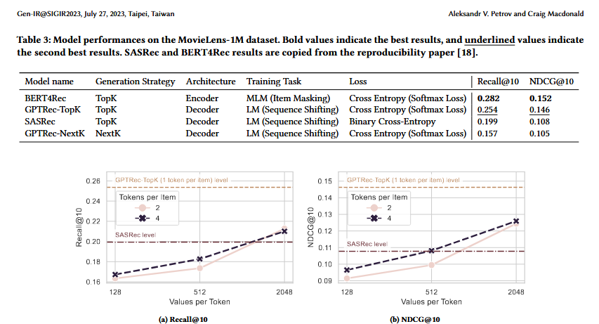

In this post, I’ll be going through the paper “Generative Sequential Recommendation with GPTRec”. This was released in 2023 by Aleksandr V. Petrov and Craig Macdonald from the University of Glasgow, who have done extensive work in the sequential recommendation space. GPTRec builds on previous approaches such as SASRec, which uses a self-attentive architecture for next-item prediction, and BERT4Rec, which applies BERT-style bidirectional encoders to recommendation problems.
This excerpt from the abstract summarises the approach:
“This paper presents the GPTRec sequential recommendation model, which is based on the GPT-2 architecture. GPTRec can address large vocabulary issues by splitting item ids into sub-id tokens using a novel SVD Tokenisation algorithm based on quantised item embeddings from a SVD decomposition of the user-item interaction matrix. The paper also presents a novel Next-K recommendation strategy, which generates recommendations item-by-item, considering already recommended items.”
So beyond applying transformers to recommendations, the authors aim to address multiple practical challenges in the field.
I find this approach very interesting. It feels like a natural progression for recommender architectures, incorporating best practices from broader AI developments over the past few years. I’ve previously implemented transformer-based encoders in industry, and while those attempts successfully improved model accuracy, I felt there was still significant room for optimisation.
1 - Introduction
Sequential vs Standard Recommendation
The authors frame sequential recommendation as distinct from traditional approaches—rather than treating user-item interactions as an unordered set, sequential models leverage the temporal ordering of interactions. This matters when consumption patterns are inherently sequential (e.g., watching a film series in order, or purchasing complementary items over time). The task is cast as next-item prediction: given a user’s interaction history, predict what they’ll engage with next.
The Top-K Problem and Next-K Solution
A key insight is that existing models like SASRec and BERT4Rec use a “score-and-rank” approach where each item is scored independently. This creates issues when similar items receive similar scores, leading to redundant recommendations (the “coffee beans problem”—if you bought a coffee machine, you might see ten different coffee bean varieties dominating your recommendations). The authors propose Next-K generation, where recommendations are produced item-by-item, with each position aware of what’s already been recommended.
Scaling to Large Catalogues
The second challenge is memory: with 10M items and 256-dimensional embeddings, the embedding table alone requires >10GB of GPU memory. The authors propose SVD Tokenisation—decomposing item IDs into sub-tokens derived from quantised SVD embeddings of the user-item matrix. This decouples vocabulary size from memory, similar to how BPE tokenisation handles large text vocabularies.
Architecture Distinction
GPTRec uses the GPT-2 decoder architecture with Cross-Entropy loss, contrasting with SASRec’s Binary Cross-Entropy. The authors claim that this loss function choice alone improves performance (+35% NDCG@10 over SASRec on MovieLens-1M).
2 - Related Work
2.1 - Adaptations of Language Models for Sequential Recommender Systems
The paper draws a parallel between NLP and sequential recommendation—both domains work with ordered sequences (words in text, items in interaction history). This structural similarity has driven researchers to adapt NLP architectures for recommendation.
Key models discussed:
GRU4Rec — One of the first neural sequential recommenders, adapted from GRU (originally designed for machine translation)
SASRec — Uses the Transformer decoder, shifting input sequences one element left (i.e., predict the next item given history).
BERT4Rec — Uses the Transformer encoder, predicting randomly masked items from sequences. This differs somewhat from a “predict the next item” task.
The authors note that while these models achieve strong ranking metrics (NDCG@K), they share two fundamental limitations: (1) the Top-K scoring strategy is inflexible for optimising auxiliary objectives like diversity or serendipity, and (2) GPU memory requirements become prohibitive as catalogue size grows.
2.2 - Recommendations as Text Generation
Recent work explores using pre-trained LLMs directly for recommendation:
P5 — Generates item and user IDs as text strings via prompting
M6-Rec — Generates item titles directly as recommendations
TIGER — Introduces “semantic IDs” where items are represented as token sets derived from side information (e.g., product category)
The authors explicitly distinguish their approach from this line of work. Pre-trained models encode world knowledge about the recommendation domain, making it difficult to isolate what the model learns from interaction patterns versus what it brings from pre-training. GPTRec deliberately avoids side information to better understand “the properties of the generative approach” in a classical sequential setting where only interaction sequences are available.
3 - Top-K and Next-K Recommendations
Typical recommendation models use a top-k method, where they filter and rank the highest scoring candidates, generally either based on similarity between user and item embeddings, or a scoring model. The issue here is that recommendations aren’t interdependant - high scoring items are likely to be from the same product category, but in practice you don’t want to recommend users variations of the same thing (this issue is called diversity). There is also issues around complimentaryness (find a better word for this) and serendipidy (i.e. recommend things that are new to them).
This paper introduces Next-K as an alternative, wherby recommendations are generated iteratively based on user / item queries as well as items already recommended. This can improve diversity, although at higher compute cost and training complexity.
4 - GPTRec
4.1 Architecture
GPTRec’s architecture is based on GPT-2, inheriting its decoder-only Transformer design with a few modifications: layer normalisation is moved to the beginning of each transformer block (pre-LN), residual weights use a modified initialisation scheme, and positional encodings are learned rather than using fixed sinusoidal patterns.
The core idea mirrors how language models treat words—here, item IDs are treated as tokens. A user’s interaction history becomes a sequence of tokens fed into the model, which learns to predict the next token (i.e., the next item the user will interact with).
The challenge emerges at scale. When your catalogue contains millions of items, each requiring its own embedding vector, memory requirements become prohibitive. A 10M item catalogue with 256-dimensional embeddings would need over 10GB just for the embedding table—before accounting for gradients, model weights, or intermediate computations. To address this, GPTRec introduces sub-item tokenisation, decomposing each item into multiple smaller tokens.
4.2 Tokenisation
The paper proposes SVD Tokenisation as a method to compress the item vocabulary. The algorithm works as follows:
Build the interaction matrix — Construct a user-item interaction matrix M where entries indicate whether a user interacted with an item
SVD decomposition — Perform truncated SVD: M ≈ U × Σ × E^T, where E contains the item embeddings with t latent components
Normalise — Scale each embedding dimension to the [0, 1] range and add small Gaussian noise (mean=0, std=10⁻⁵) to ensure no two items have identical embeddings
Quantise — Discretise each dimension into v bins, converting continuous embeddings into discrete token IDs
Offset — Shift the i-th dimension’s values by v×(i-1) so each dimension has its own token range (dimension 0 uses tokens [0, v-1], dimension 1 uses [v, 2v-1], etc.)
The result is that each item is now represented by t sub-tokens, where each sub-token comes from a vocabulary of size v. The total embedding table size becomes t×v rather than scaling with the number of items.
For large catalogues, e.g. LaftFM-1b dataset with ~33m items, this reduces the size of the embedding table > 99%, depending on selection of parameters v i.e. number of tokens per dimension, and t i.e. number of dimensions.
The paper gives psudocode for this, which I’ve emulated in python below.
import numpy as npfrom scipy.sparse import csr_matrixfrom scipy.sparse.linalg import svdsdef svd_tokenize_items(interaction_matrix, n_components=8, n_bins=256):""" SVD Tokenisation as described in GPTRec Section 4.2 Args: interaction_matrix: User-item interaction matrix (users x items) n_components: Number of latent dimensions (= number of sub-tokens per item) n_bins: Number of discrete bins per dimension (vocabulary size per sub-token) Returns: item_tokens: Array of shape (n_items, n_components) with sub-token ids bin_edges: List of bin edges for each dimension (for decoding) """# Convert to sparse if neededifnotisinstance(interaction_matrix, csr_matrix): interaction_matrix = csr_matrix(interaction_matrix)# SVD decomposition - get item embeddings (V^T from U * S * V^T)# We want item factors, so we transpose to get items in rows U, S, Vt = svds(interaction_matrix, k=n_components)# Item embeddings: V^T transposed and scaled by singular values item_embeddings = Vt.T * S # Shape: (n_items, n_components)# Quantise each dimension into n_bins discrete tokens item_tokens = np.zeros_like(item_embeddings, dtype=np.int32) bin_edges = []for dim inrange(n_components):# Create bin edges based on percentiles for balanced bins edges = np.percentile(item_embeddings[:, dim], np.linspace(0, 100, n_bins +1)) bin_edges.append(edges)# Assign each item's value to a bin (token) item_tokens[:, dim] = np.clip( np.digitize(item_embeddings[:, dim], edges[1:-1]), 0, n_bins -1 )return item_tokens, bin_edges# Create dummy interaction matrix (100 users, 500 items)np.random.seed(42)n_users, n_items =100, 500interactions = (np.random.rand(n_users, n_items) <0.1).astype(float)# Tokenize itemsn_components =4# 4 sub-tokens per itemn_bins =16# 16 possible values per sub-tokenitem_tokens, bin_edges = svd_tokenize_items( interactions, n_components=n_components, n_bins=n_bins)print("og items shape:", np.arange(n_items).shape)print("new items shape:", item_tokens.shape)print("og items num embeds:", n_items)print("new items num embeds:", len(np.unique(item_tokens.flatten())))
og items shape: (500,)
new items shape: (500, 4)
og items num embeds: 500
new items num embeds: 16
The memory savings can be dramatic. Table 1 in the paper shows that for the LastFM-1b dataset (~32M items), using t=8 tokens with v=2048 bins reduces embedding storage to just 0.05% of the original size—from over 30GB down to 16MB.
That said, this technique comes with trade-offs:
Added complexity — The embedding creation pipeline becomes more involved, requiring SVD computation and careful quantisation
Hyperparameter tuning — You need to select appropriate values for v (bins per dimension) and t (number of dimensions), which may vary by dataset
Information loss — Quantisation inherently groups similar items together, which may aid generalisation but sacrifices item-level specificity
4.3 Training Objective and Loss Function
GPTRec follows the standard language modelling objective with Cross-Entropy loss. The model learns to predict each token in the sequence given all preceding tokens, factorising the sequence probability as:
p(S) = ∏ p(sᵢ | s₁, s₂, …, sᵢ₋₁)
Like GPT-2, the model uses causal masking to generate predictions for all positions in a single forward pass—each position predicts the next token, enabling efficient training over entire sequences.
One aspect I find interesting is how the sequence structure works with sub-item tokenisation. Given a user’s history, the input sequence becomes a mix of sub-item tokens (which have no natural ordering within an item) interleaved with the temporal ordering of actual purchases. This creates an unusual sequence structure that the positional encoder must handle. The authors’ choice of learned positional encodings over sinusoidal ones likely helps the model adapt to this hybrid ordering.
4.4 Generating Recommendations…
GPTRec supports two recommendation strategies: Top-K (the standard approach) and Next-K (their proposed alternative).
Top-K generation works as expected in one-token-per-item mode—the model outputs a probability distribution over items, and you select the K highest-scoring items. This is typical of how recommendation systems generate item predictions.
Next-K generation produces recommendations iteratively. At each step, the model considers the user’s history plus all items already recommended, then selects the next best item. This is equivalent to greedy decoding in language models and naturally avoids recommending the same item twice.
The multi-token generation challenge
When using sub-item tokenisation, generating recommendations becomes more involved since each item is represented by multiple tokens. The paper addresses this in Section 4.4.2 with a sampling-based approach:
Use standard autoregressive generation to sample t tokens, forming a candidate item representation
Check if the generated token sequence maps to a valid item ID (discarding invalid sequences)
Score valid candidates using the chain rule, multiplying the conditional probabilities of each sub-token
Apply standard Top-K ranking over the candidates, treating any item that wasn’t sampled as having a score of negative infinity
The authors acknowledge this is somewhat inefficient, noting they generate K=50 candidates just to produce 10 recommendations, since many sampled sequences are either invalid or duplicates.
While the mechanism is clear, there are some practical limitations worth considering:
Sampling coverage: Since only sampled candidates are considered, you could miss relevant items that simply weren’t generated during sampling. The model’s recommendations are bounded by what it happens to sample.
Quantisation collisions: Items that share identical token sequences (a natural consequence of the quantisation step) become indistinguishable to the model.
Scoring assumptions: Using the chain rule to combine sub-token probabilities into an item score is a reasonable heuristic, but it’s not obvious this is optimal. The model wasn’t explicitly trained to produce well-calibrated item-level probabilities through this mechanism.
On Next-K alignment
The paper acknowledges that Next-K generation isn’t well-aligned with the training objective. The model is trained to predict the actual next item a user interacted with, but at inference time it’s asked to predict item i+1 as if the user had interacted with items 1 through i—which they haven’t. The authors suggest reinforcement learning techniques (similar to InstructGPT) as future work to better align training with generation.
I’m somewhat sceptical of the Next-K approach in general. While the motivation of solving the diverity issue found in Top-K recommendations is sound, the solution feels awkward. You’re essentially recommending subsequent items under the assumption that the user will engage with each recommendation in sequence, which rarely reflects real user behaviour. The computational overhead (K forward passes instead of one) compounds this concern. There are likely better approaches to the diversity problem that don’t require such strong assumptions about sequential engagement. That said, instruction tuning could help align the model’s training objective with its generation objective, potentially making Next-K more viable.
6 - Experiments
The authors evaluate GPTRec on the MovieLens-1M dataset using a leave-one-out strategy—holding out each user’s most recent interaction for testing, with a small validation set (128 users’ second-to-last interactions) for early stopping.
Experimental setup notes:
The configuration choices are reasonable but raise some questions. The maximum sequence length is capped at 100 tokens, yet the dataset’s average sequence length is 165 interactions. This truncation means the model only sees the most recent portion of longer user histories, potentially discarding useful signal.
The authors also acknowledge a known issue with MovieLens-1M: timestamps reflect when users rated films, not when they watched them. This introduces noise into the sequential ordering that the model relies on. I suspect this penalises autoregressive models (GPTRec, SASRec) more heavily than BERT4Rec, since bidirectional models with random masking are less dependent on strict temporal ordering.
RQ1: One-token-per-item performance
Comparing GPTRec-TopK against baselines, the model achieves NDCG@10 of 0.146—a 35% improvement over SASRec (0.108) but 4% below BERT4Rec (0.152). The authors attribute SASRec’s underperformance to its use of Binary Cross-Entropy loss versus GPTRec’s standard Cross-Entropy, suggesting the loss function choice alone accounts for much of the gap.
RQ2: Multi-token-per-item trade-offs
Performance degrades when using SVD tokenisation, though the model remains competitive with SASRec. With 4 tokens per item and 512 bins, GPTRec matches SASRec’s NDCG@10 (0.108) while requiring 40% fewer embeddings. However, this falls well short of GPTRec in one-token mode (0.146).
The trend is clear: more bins per token improves quality. With only 128 bins, NDCG@10 drops to 0.091; increasing to 2048 bins recovers performance to 0.124. This suggests the quantisation granularity is a key bottleneck—coarser discretisation loses too much item-level information.
RQ3: Next-K degradation
At K=1, Top-K and Next-K strategies are equivalent (both simply select the highest-probability item). As K increases, Next-K quality degrades, reaching 75% of Top-K performance at K=10. This aligns with the authors’ acknowledgment that the training objective isn’t aligned with iterative generation—the model learns to predict what users actually interacted with next, not what would be a good recommendation given hypothetical prior recommendations.
Despite this, GPTRec-NextK still matches SASRec’s performance (both at 0.108 NDCG@10), which the authors frame as a viable starting point for future work with reinforcement learning fine-tuning.

Conclusions
The authors outline several directions for future work:
Larger datasets — The experiments use only MovieLens-1M (~3.4K items). The memory benefits of SVD tokenisation become most compelling at scale (Table 1 shows >99% reduction for LastFM-1b’s 32M items), but these gains remain untested.
Beam search for multi-token generation — The current sampling approach discards many invalid sequences and may miss relevant items. Beam search could improve candidate coverage.
RL fine-tuning for Next-K — The training objective (predict the actual next item) is misaligned with Next-K generation (predict good recommendations given hypothetical prior recommendations). The authors suggest InstructGPT-style reinforcement learning to close this gap.
Hyperparameter exploration — The paper tests limited configurations; broader tuning of model depth, embedding dimensions, and tokenisation parameters could yield improvements.
My thoughts
The core ideas here are compelling: applying generative LM techniques to recommendation, addressing vocabulary scaling through sub-item tokenisation, and rethinking the independence assumption in Top-K ranking. However, the empirical results are underwhelming.
GPTRec-TopK underperforms BERT4Rec by 4% on NDCG@10, and the multi-token mode further degrades to match SASRec—the very baseline the authors critique. The Next-K strategy, while conceptually interesting for diversity, performs 25% worse than Top-K at the standard K=10 cutoff and relies on assumptions about sequential user engagement that rarely hold in practice.
The tokenisation approach also leaves practical questions unanswered. When multiple items map to identical token sequences (an inevitable consequence of quantisation), how should the system distinguish between them at serving time? The paper doesn’t address this collision problem or how to recover specific item IDs from generated sub-tokens.
I appreciate this as foundational work exploring generative approaches to recommendation, but the gap between the compelling motivation and the actual results is substantial. The promised benefits—memory efficiency, flexible objectives, interdependent recommendations—remain largely theoretical until demonstrated on large-scale catalogues with competitive accuracy.
!cd ~/andrew_boney_blog && quarto preview --port 8000--host 0.0.0.0--no-browser
Preparing to preview
[1/4] posts/GPTRec Paper Read/index.ipynb
[2/4] posts/Gen-RecSys Paper Read/index.ipynb
[3/4] posts/LeJEPA Paper Read/index.ipynb
[4/4] index.qmdWatching files for changesBrowse at http://0.0.0.0:8000/posts/Gen-RecSys Paper Read/index.html
Listening on http://0.0.0.0:8000/ (http://localhost:8000/)
GET: /GET: /posts/GPTRec Paper Read/
[1/2] posts/GPTRec Paper Read/index.ipynb
[2/2] index.qmdGET: /posts/GPTRec Paper Read/